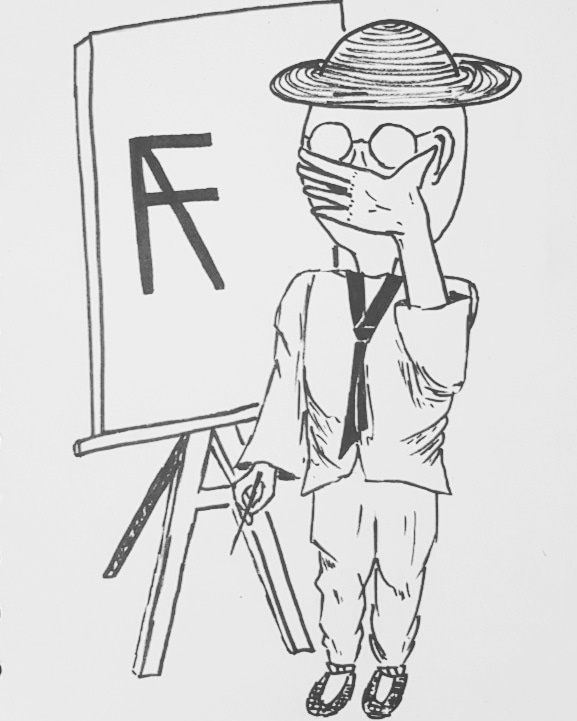

Eighf's GardenEighf's Garden
Eighf's GardenEighf's Garden
Eighf는 취미로 그림을 그리기 시작한지 얼마 되지 않는 작가이다. 자신의 노트에 간단히 연필과 플러스펜, 볼펜으로 그림을 그려나가고 있다. 전문적으로 그림을 배우지 않고 그림을 취미로 하는 사람으로 활동하기에 누구나 접할 수 있는 도구들을 이용하여 그림을 그린다.
보통 사람의 감정이나 작가 본인이 느끼는 감정을 상상하여 그림을 그리는 경우가 많다. 최근 보이는 작품으로는 사람의 표정묘사와 녹아흐르는 물체, 장미를 볼 수 있다. 사람 표정 묘사는 상상과 자신의 얼굴을 직접 그 감정에 몰입시켜 표정을 지어보며 그림을 그리고 녹아흐르는 물체는 살마도르 달리의 작품을 보고 영감을 얻어 그리기를 연습해보았다고 한다. 장미는 어떤 방식으로 그릴 수 있을지 또 사용하는 도구에 따라 그릴 수 있는 방법도 다르다는 것을 알고 Eighf 스타일의 장미그리는 법을 통해 여러 작품을 그려내었다.
Eighf는 자신이 그리는 작품을 농부가 키운 작물로 빗대어 말하고 자신을 art farmer라고 자칭하였다. 작품마다 새겨져있는 시그니처 사인은 art farmer의 앞글자인 a와 f를 겹쳐놓은 디자인이다. 이 사이트의 명칭이 Garden인 것 또한 그의 작품이 작물이라는 관점에서 나온 아이디어이다.

왼쪽의 그림은 작가 본인이 자신의 캐릭터를 시그니처 사인과 함께 그려본 것이다. 작품이라는 작물을 키우는 농부의 모습을 하고 있다.